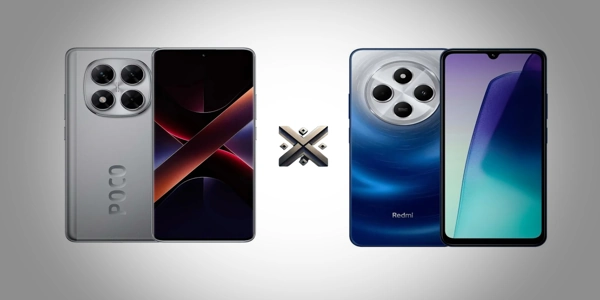

A Xiaomi é uma das fabricantes mais influentes do mercado de smartphones atualmente, conhecida por oferecer dispositivos com ótimo desempenho e preços competitivos. Em 2025, dois smartphones da Xiaomi se destacaram no mercado: o Poco X7 5G e o Redmi 14C. Cada um, à sua maneira, busca oferecer uma experiência satisfatória e equilibrada para diferentes perfis de usuários.
Neste conteúdo, analisamos minuciosamente o Poco X7 e o Redmi 14C, explorando aspectos fundamentais como desempenho, autonomia de bateria, capacidade de armazenamento, qualidade das câmeras e outros pontos importantes. Se você está em dúvida sobre qual modelo escolher, continue lendo para descobrir qual Xiaomi é a melhor escolha.

Poco X7 5G: foi lançado em janeiro de 2024, como parte da linha intermediária premium da Xiaomi. Ele chegou para suceder o popular Poco X5, trazendo melhorias significativas no processador, tela e carregamento rápido.
Já o Redmi 14C foi lançado alguns meses depois, em abril de 2024, sendo o sucessor direto do Redmi 13C. O Redmi 14C foi desenvolvido pensando em quem procura um smartphone econômico, sem abrir mão de funcionalidades atuais e desempenho eficiente nas atividades cotidianas.
Para quem valoriza cores mais vivas, maior brilho e uma navegação mais fluida, o Poco X7 leva vantagem com sua tecnologia de tela mais avançada.
Se o foco for velocidade e acesso ao 5G, o Poco X7 se destaca como a escolha mais equilibrada.
Ambos os smartphones oferecem uma capacidade interna satisfatória, mas o Poco X7 sai na frente ao oferecer o dobro de espaço de armazenamento e uma RAM mais generosa, garantindo um desempenho mais fluido, especialmente em multitarefas e jogos exigentes.
O Poco X7 traz mais qualidade em fotos noturnas e vídeos graças ao OIS e ao sensor superior.
O Poco X7 se destaca pela recarga veloz e entrega energia suficiente para aguentar o dia todo com tranquilidade.
O Poco X7 é mais completo em termos de conectividade, ideal para quem usa Pix por aproximação, gadgets e redes rápidas.
Ambos têm design moderno, com corpo em plástico e acabamento premium. Com bordas mais discretas e opções de cores vivas, o Poco X7 apresenta um visual mais sofisticado e moderno.
Ambos os modelos estão disponíveis na StoreAlexandreGames, com entrega rápida e garantia nacional.
| Perfil do Usuário | Melhor Escolha |
|---|---|
| Uso básico (WhatsApp, YouTube, redes sociais) | Redmi 14C |
| Jogos e multitarefas intensas | Poco X7 |
| Conectividade 5G e NFC | Poco X7 |
| Orçamento limitado | Redmi 14C |
| Melhor câmera e tela AMOLED | Poco X7 |
O Poco X7 5G é a melhor escolha para quem busca desempenho de ponta, câmeras superiores, mais armazenamento e recursos extras como 5G e NFC. É ideal para quem quer um celular completo, com tecnologia atualizada e ótima durabilidade.
Já o Redmi 14C se destaca pelo preço acessível, sendo perfeito para quem precisa de um celular eficiente para o dia a dia, sem abrir mão de boa bateria e tela grande.
Ambos os modelos estão disponíveis com excelentes condições na StoreAlexandreGames. Aproveite para garantir o seu com segurança e confiança!